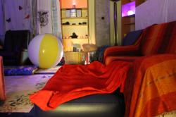

ASBL Ballon d'Oxygène
{kind=link}
Espace Snoezelen et jeux
L'équipe de l'ASBL Ballon d'Oxygène a aménagé un nouveau lieu d'accueil divisé en deux espaces : snoezelen et jeux. Celui-ci est adapté afin de pouvoir accueillir des personnes atteintes de tous types de difficultés dans un cadre sollicitant et sécurisé.
Cet espace est situé à Neupré au bord de la route du Condroz à côté du magasin "Trafic"; il est donc très facile d'accès et bordé de nombreuses places de parking
Les objectifs principaux du "snoezelen" et de l'espace de jeux sont :
- fournir un lieu d'accueil adapté à une multitude de handicaps afin de permettre aux familles en besoin de nous confier leur proche en dehors du milieu familial = objectif de répit sur le court terme.
- permettre à chaque bénéficiaire de trouver sa place au sein du lieu d'accueil afin de passer des instants de détente et de découverte en toute sécurité = objectif de répit sur le long terme.
- fournir un espace de travail adapté en dehors du milieu de vie et du milieu scolaire pour des enfants ayant besoin d'un soutien en vue d'une meilleure intégration scolaire et sociale.
Ce lieu d'accueil est adapté pour des personnes, de tous âges, atteintes de tous types de handicap ou de difficulté.
{kind=link}
- Personne autiste ou atteinte d'autres troubles envahissants du développement.
- Personne handicapée mentale.
- Enfant atteint d'un handicap physique ou de handicap associé.
- Adulte atteint d'un handicap physique modéré (nous ne sommes pas encore équipés pour accueillir des adultes avec des handicaps physiques importants, à voir au cas par cas.) ou de handicap associé.
- Enfant "caractériel"
- Enfant ou adolescent en détresse psychologique
- Personne atteinte de démence et/ou de la maladie d'Alzheimer
- Personne atteinte de problèmes de dépendance
- Personne ayant besoin de moments de recentration sur soi, d'instant ressourçant et / ou d'induction positive
- ...
Hormis cela, l'ASBL ballon d'Oxygène et son équipe propose d'autres types d'accompagnement :
- accompagnement professionnel à domicile
- accompagnement scolaire professionnel
- accompagnement professionnel d'urgence en cas d'imprévu (24/24H)
- mise en place d'activités sportives, ludiques et créatives adaptées (et stage durant les vacances scolaires)
- accompagnement durant vos déplacements à l'étranger ou lors de toute activité particulière au cours de laquelle la personne a besoin de soutien (déplacements, séjour à l'hôpital ...).